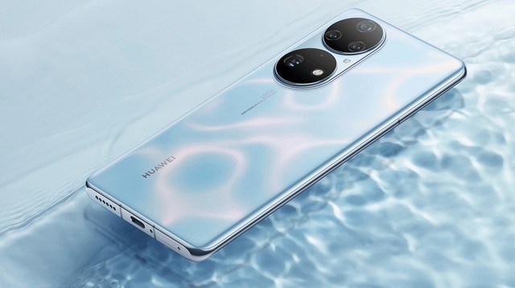

HUAWEI
HUAWEI P50

Huawei Technologies is a Chinese multinational technology corporation headquartered in Shenzhen, Guangdong, China. It designs, develops, and sells telecommunications equipment and consumer electronics.
The corporation was founded in 1987 by Ren Zhengfei, a former Deputy Regimental Chief in the People's Liberation Army.Initially focused on manufacturing phone switches, Huawei has expanded its business to include building telecommunications networks, providing operational and consulting services and equipment to enterprises inside and outside of China, and manufacturing communications devices for the consumer market. Huawei has over 194,000 employees as of December 2019.
Huawei has deployed its products and services in more than 170 countries and areas. It overtook Ericsson in 2012 as the largest telecommunications equipment manufacturer in the world,and overtook Apple in 2018 as the second-largest manufacturer of smartphones in the world, behind Samsung Electronics. In 2018, Huawei reported that its annual revenue was US$108.5 billion.In July 2020, Huawei surpassed Samsung and Apple to become the top smartphone brand (in number of phones shipped) in the world for the first time. This was primarily due to a drop in Samsung's global sales in the second quarter of 2020, owing to the impact of the COVID-19 pandemic.